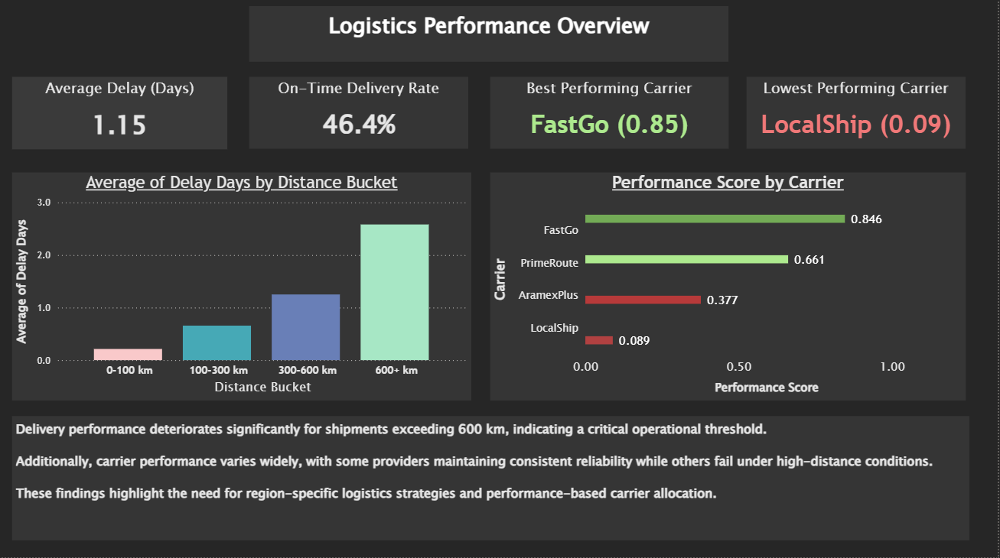

تحليل السوق
سوق العقارات السعودي
نظرة متكاملة على المبيعات والإيجارات والسكان والمؤشرات الاقتصادية في مدن المملكة.
Power BI · DAX · Python
استعرض المشروعأنا عاصم هيج. أحوّل البيانات المعقّدة إلى لوحات معلومات وتقارير واضحة تساعد على اتخاذ القرارات المالية والسوقية والتشغيلية.
أقيم في جدة، المملكة العربية السعودية · خريج رياضيات
نظرة متكاملة على المبيعات والإيجارات والسكان والمؤشرات الاقتصادية في مدن المملكة.
Power BI · DAX · Python
استعرض المشروع
تحليل الربحية والسيولة والرافعة المالية ومقارنة الأداء بمعايير القطاع استنادًا إلى القوائم المالية للفترة 2019–2024.
Power BI · Python · Excel
استعرض المشروع
تحليل تأخيرات التسليم والالتزام باتفاقيات مستوى الخدمة ومقارنة شركات النقل لتحديد مواطن التعثّر في العمليات.
Power BI · Python · Excel
استعرض المشروعإلى جانب مشاريعي التحليلية المستقلة، أساهم في تنظيم المعلومات المالية وتقييم برامج التدريب.
المزيد عن خبرتي ←تنظيم إجراءات العمل المالية والتخطيط لموازنات المشاريع وتوثيق العقود خلال مرحلة تأسيس الشركة والتحضير للتنفيذ.
إدارة عمليات برامج التدريب وتقييم المشاركين وإعداد التقارير الشهرية وتقديم ست ورش في مجال البيانات.
متاح لفرص العمل في تحليل البيانات وPower BI داخل السعودية أو عن بُعد.